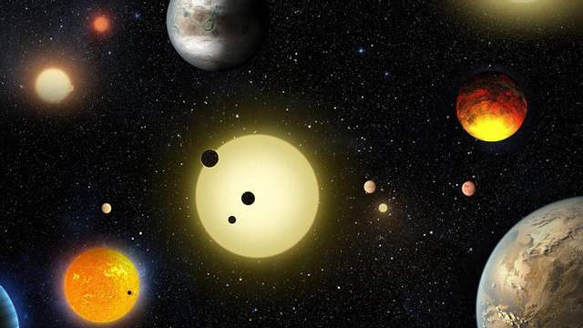
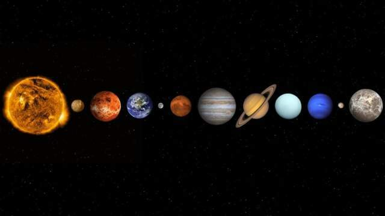

Що таке космос
Слово "космос" з грецької перекладається як "порядок", "устрій", "впорядкованість". У
стародавні часи так називали світобудову – тобто
йшлося про Лад на противагу Хаосу. Зараз
космос
–
це все, що існує за межею земної атмосфери. Таке поняття космічного простору припускає його
нескінченність.
Учені умовно поділяють Всесвіт на кілька частин. Отож, космос є
- далекий (міжзоряний простір; міжгалактичний простір)
- близький (навколоземний космічний простір; міжпланетний простір)

Сонце - порівняно невелика зірка у космосі
Цікаві факти про космос і планети
Інформація про космос у школі нам видавалася не такою цікавою тільки тому, що так її подавали. Насправді
Всесвіт – це суцільні цікавинки, нумо знайомитися з ними.
- Юпітер може вмістити в себе тисячу планет розміром з нашу Землю. Але при цьому Сонце більше за цього
гіганта, хоча якщо порівнювати наше головне світило з іншими зірками у
Всесвіті – то воно виявиться
неймовірно крихітним. Наприклад, зірка Великий пес більша за Сонця в півтори тисячі разів.
- Одна доба на Венері триває 224,7 "земних" дні, тобто понад 7 місяців. Венера – це також єдина планета
Сонячної системи, яка обертається проти годинникової стрілки
- Ви не змогли б пройтися по Юпітеру, Сатурну, Урану або Нептуну, тому що у них немає твердої поверхні.
- Найвища гора, відома людині, розташована на астероїді Веста. Вона заввишки 22 км у висоту. Астероїд
Веста – друге за масою тіло в поясі астероїдів між орбітами Марса і Юпітера.
- На планеті HD189733b постійно йде скляний дощ.
- Космічний простір не може мати ні центру, ні краю тому, що відповідно до теорії відносності Ейнштейна
гравітація згинає весь простір в нескінченну криву.
- Всесвіту, ймовірно, близько 15 млрд років, але оцінки вчених коливаються.
- 98% маси всіх об'єктів Сонячної Системи становить маса Сонця.
- Тривалість повного місячного затемнення становить 104 хвилини, а от повне сонячне затемнення триває не
більше ніж 7,5 хвилин
- У сузір'ї Орла дослідники виявили газову хмару. Як вважають астрономи, у ній є досить алкоголю, щоб
випустити 400 трильйонів пляшок пива.

Планети Сонячної системи
Невідомі факти про Землю
Кожну хвилину Земля пролітає 19 300 кілометрів
- Температура на орбіті Землі дорівнює + 4 °С
- Навколо нашої планети обертається понад 8 тисяч одиниць космічного сміття.
- Відстань до найближчої (після Сонця) від нас зірки (Проксими Центавра) становить 4,24 світлових роки.
- Вчені вважають, що планети, схожі на Землю, є у кожної шостої зірки. Це означає, що тільки в нашій
Галактиці може бути близько 33 млрд планет, придатних для життя.
- Люди завжди бачать один і той же бік Місяця. Гравітаційне поле Землі сповільнює обертання
Місяця навколо своєї осі, тому своє обертання планета проходить за той же час.
Крім того, зворотна
сторона
Місяця більш горбиста порівняно з тією, яку видно.